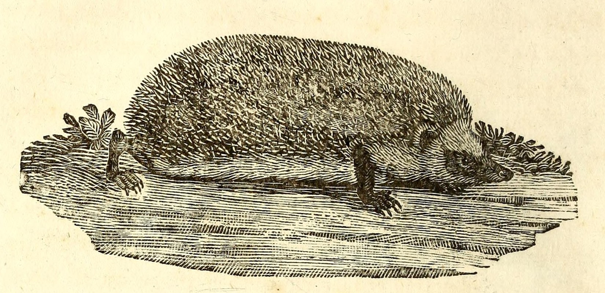
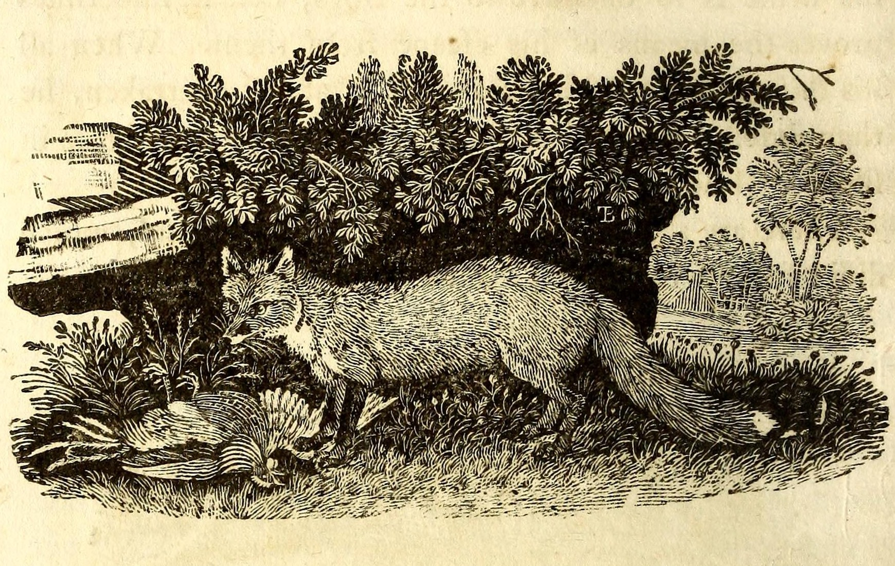

Two Cohabitating Modes
Why this cabinet has a sibling, and why neither of them is the annexe.
This site reads the world through the humanities. Star Stuff reads it through science. That is one project with two halves, and the halves were divided on purpose — evidence and interpretation, a wrong fact and a wrong attribution, a night sky and a herbarium sheet in daylight. Star Stuff’s own founding paper takes Carl Sagan’s pair for this: skepticism and wonder, the two uneasily cohabiting modes. This page takes the older metaphor for the same argument — the fox and the hedgehog — and then hands it to the people it was never written about, who have already claimed the hedgehog.
Two shelves, and neither is the annexe Link to this section
The Stimpunks Foundation states the position this rests on, and states it as a refusal rather than a preference.
But we’re also not anti-science. We’re anti-scientism — the belief that science alone produces valid knowledge, that lived experience is noise to be filtered out, that the measurer doesn’t belong in the measurement. Science and philosophy. Empiricism and voice. Skepticism and wonder. These aren’t opposites. They’re the whole point.
Anti-scientism is not a smaller claim than anti-science; it is a more exacting one. It concedes everything a sceptic could want about method and then asks who is allowed into the room where the method is applied — which is a question method cannot answer about itself. Two sites is what that answer looks like when it is built rather than asserted. Star Stuff fact-checks to the primary and its risk is a wrong fact. This cabinet cites to the primary and its risk is a wrong attribution. Neither risk is the junior one.
Dorion Sagan gives the instrument for it in one line.
Science’s eye for detail, buttressed by philosophy’s broad view, makes for a kind of alembic, an antidote to both.
An antidote to both is the part that earns the two sites. Not a synthesis, in which each side gives something up, and not a division of labour, in which each side minds its own business. An alembic is a vessel for driving one thing through another until what comes out is neither. The eye for detail is an antidote to the broad view going vague; the broad view is an antidote to the eye for detail mistaking what it can measure for what there is.
The fox knows many things Link to this section
The older name for the pair is a single surviving line of Archilochus, a seventh-century poet and soldier from Paros: the fox knows many things, but the hedgehog knows one big thing. It reaches this page as English, through Isaiah Berlin’s essay on Tolstoy, by way of a review we did read. No Greek edition has been opened here, so the wording above is a rendering in circulation and not a translation this site can vouch for.
What Berlin did with the line was turn a proverb into a typology, sorting thinkers into those who drive everything through one idea and those who range. Stephen Jay Gould then set a second pair beside it. Pieter Vanhuysse puts the whole descent in one paragraph.
In a justly famous essay on Tolstoy, Isaiah Berlin (1978) categorized thinkers as either foxes or hedgehogs. The fifth-century Greek poet-soldier Archilochus first made this distinction, and it was further elaborated during the Renaissance by Erasmus of Rotterdam: the versatile fox tries his hand (feet) at many things, while the hedgehog doggedly pursues one big thing. According to Berlin, figures like Plato, Pascal, Hegel, Nietzsche, Dostoyevsky and Proust were definite hedgehogs, and Aristotle, Montaigne, Erasmus, Goethe, Joyce and Shakespeare, foxes. Tolstoy alone combined the traits of both. In The Hedgehog, the Fox and the Magister’s Pox, the late Stephen Jay Gould in turn built upon Jonathan Swift’s story of The Battle of the Books to add the further contrast between bees and spiders. Spiders represent natural scientists, building ever newer, and often revolutionary, knowledge upon their own foundations—poison and gall. Bees are humanists. They keep reinterpreting the great classics, jumping from flower to flower and collecting the best of what is to be offered. But in so doing, they produce something valued at all times—honey and wax; beauty and utility; sweetness and light.
the traits of bothis dropped here, and is the only alteration. Licensed CC BY-NC-SA 3.0 as the journal’s content of that period; quoted, not adapted, so nothing on this page takes that licence.
Two things in that citation were wrong before we touched it, and one of them is the journal’s Education Review’s own record credits this review to Stephen Jay Gould — the author of the book it reviews, who had been dead for four years when it ran. The article’s first page names Pieter Vanhuysse, its abstract says I argue that Barzun and Gould contribute valuable insights
, its running head says Vanhuysse, and its last page carries his university address. The web record also files it as volume 13; the PDF’s own running head says volume 9, number 1. Every citation manager pointed at that page produces a citation crediting a review to its subject, which is the same collapse this site’s ledger exists to catch and the same one check-metadata.mjs refuses in our own JSON-LD. We cite the PDF.
And one of them is Vanhuysse’s, kept because it is his Archilochus is seventh-century, not fifth. His own fragments date him: one mentions the solar eclipse of 6 April 648 BC, another the wealth of Gyges of Lydia. The quotation above keeps fifth-century
because the words inside a quotation are not ours to tidy — correcting a source silently is how a reader comes to believe we found it that way. The correction goes here, outside the marks, where it can be argued with. Two centuries is also a useful demonstration of the division this page is about: which century is a fact and it is checkable, and which thinkers are hedgehogs is a reading and it is not.
The hedgehog, entire Link to this section
Berlin’s hedgehog is a figure of speech with Dostoyevsky inside it. Here is a hedgehog instead, from an anthology of children’s verse published in Oxford in 1922.
The hedgehog is a little beast Who likes a quiet wood, Where he can feed his family On proper hedgehog food.
He has a funny little snout That’s rather like a pig’s, With which he smells, like us, of course, But also runts and digs.
He wears the queerest prickle coat, Instead of hair or fur, And only has to curl himself To bristle like a burr.
He does not need to battle with Or run away from foes, His coat does all the work for him, It pricks them on the nose.
The poem says runts
, and we went to the plate to be sure A snout that smells, like us, of course, But also runts and digs
is nearly certainly a compositor’s slip for roots — rooting is what a pig’s snout does, it is the rhyme the stanza is built on, and runts is not a verb. The 1922 edition prints runts
all the same, which we established by magnifying the letterforms rather than trusting the scan’s own text layer: the u
is open-topped and unmistakable against the closed o
of also
two words earlier. So it stands. The obvious correction is somebody else’s decision to make, and making it quietly would leave King saying a word she did not print. Every web transcription we found also carries runts
, and all of them additionally put full stops where the 1922 setting has commas — four line-ends in the first three stanzas. The commas are hers.

is provided by Nature with a spinous armour. Read off the Smithsonian Libraries scan 10 September 2026.
DESTITUTE of every other means of defence, is provided by Nature with a spinous armour, which secures it from the attacks of all the smaller beasts of prey; such as Weasels, Martins, Polecats, &c.—When alarmed, it immediately collects itself into the form of a ball, and presents on all sides a surface covered with sharp points, which few animals are hardy enough to engage. The more it is harrassed, the closer it rolls itself;
fpinous,
fecures,
beaftson the page — and
harrassedis the printing’s own spelling. Nothing is elided: the passage runs from the drop capital to that semicolon.
Destitute of every other means of defence. A naturalist with no interest in metaphor wrote down the same thing King’s poem does and Liv’s post does: the coat is not one option among several. It is the only one, and it is not chosen. The more it is harrassed, the closer it rolls itself — which is exposure anxiety and masking observed from the outside, in 1792, by somebody watching an animal in a hedge.
Take the poem at its word and it is a description of a bodymind, not a temperament. The hedgehog does not choose to be armoured and does not deploy the armour tactically. He only has to curl himself; the coat does all the work for him. He does not battle and he does not flee, which are the two things a threatened animal is supposed to pick between — he has a third option that costs him nothing to use and everything to be. And the wood is quiet because that is the wood in which the food is proper.
The fox, entire Link to this section
There is no fox in that anthology. There is one in the oldest nursery collection in English, which is where the fox has always lived — going through the town at night and coming back with something.
The fox and his wife they had a great strife, They never eat mustard in all their whole life; They eat their meat without fork or knife, And loved to be picking a bone, e-ho!
The fox jumped up on a moonlight night; The stars they were shining, and all things bright; Oh, ho! said the fox, it’s a very fine night For me to go through the town, e-ho!
The fox when he came to yonder stile, He lifted his lugs and he listened a while! Oh, ho! said the fox, it’s but a short mile From this unto yonder wee town, e-ho!
The fox when he came to the farmer’s gate, Who should he see but the farmer’s drake; I love you well for your master’s sake, And long to be picking your bone, e-ho!
The gray goose she ran round the hay-stack, Oh, ho! said the fox, you are very fat; You’ll grease my beard and ride on my back From this into yonder wee town, e-ho!
Old Gammer Hipple-hopple hopped out of bed, She opened the casement, and popped out her head; Oh! husband, oh! husband, the gray goose is dead, And the fox is gone through the town, oh!
Then the old man got up in his red cap, And swore he would catch the fox in a trap; But the fox was too cunning, and gave him the slip, And ran thro’ the town, the town, oh!
When he got to the top of the hill, He blew his trumpet both loud and shrill, For joy that he was safe Thro’ the town, oh!
When the fox came back to his den, He had young ones both nine and ten, “You’re welcome home, daddy, you may go again, If you bring us such nice meat From the town, oh!”
and all things / bright;,
hopped out of / bed,,
the gray goose / is dead,,
and gave him / the slip,,
you may go / again,— and
She opened the casement, and popped out / her head;, which is the longest line in the poem and the one that overruns furthest here. It is also sung, as The Fox or Daddy Fox, in variants that reach much further back than this printing.
Everything the fox has is a method. He listens at the stile before committing; he estimates the distance; he flatters the drake and then the goose, in the same breath as pricing them; he is too cunning for the trap. He crosses a stile, a farmyard, a hay-stack, a bedroom window and a hill in nine stanzas, and the refrain that ends each of them is the town — the place that is not his, gone through and got out of. Nothing about him does all the work for him. He has to go every time.

is the least, but the most common; and approaches nearest to the habitations of mankind. It lurks about the out-houses of the farmer, and carries off all the poultry within its reach.
That is the rhyme, in prose, ninety-four years before Halliwell printed it. The out-houses of the farmer are the farmer’s gate; all the poultry within its reach is the drake and the gray goose. Neither text is quoting the other — a naturalist in Newcastle and an anonymous nursery rhyme arrive at the same fox because it is the fox that was there, going through the town.
Both of them are feeding a family Link to this section
The two poems were written eighty years and a world apart, for different books, by an anonymous tradition and by a schoolteacher in Oxford. They end in the same place, and it is the only place either of them was ever going.
King’s hedgehog likes a quiet wood where he can feed his family on proper hedgehog food. Halliwell’s fox comes home to young ones both nine and ten, who tell him he may go again if he brings such nice meat. One goes nowhere and eats the right thing; one goes everywhere and takes what there is. Both of them are somebody’s father coming back with dinner.
That is the whole of what this page has to say about the typology, and it is a correction to it. Berlin’s fox and hedgehog are two ways of being a great man — a list of six against a list of six, with Tolstoy alone allowed both. Read from the poems instead, they are two ways of solving the same problem, and the problem is not what kind of thinker am I. It is dinner. Neither animal is admired in its poem and neither is pitied; each is simply described doing what its body makes possible.
A typology tells you which kind you are. A competency network asks what the group needs and who can do it. Those are different questions, and only the second one has anybody eating at the end of it.
The coat, and the curl Link to this section
Hedgehogs came to this cabinet before the proverb did. Spiky profile is the term for a bodymind with real strengths and real deficits in the same person, varying by the hour; a hedgehog is what a spiky profile looks like if you draw it. Our own foundation has been drawing it for years, down to a mascot. And the reason it is the right drawing is not that spikes are a nice visual pun. It is this.
As anyone with a disability will be aware, we are constantly having to ‘prove’ we are disabled ‘enough’ and eligible for support (financial and literal). Having a super spiky profile, which immediately conjures images of us as a hedgehog, can leave us feeling like we are loosing the plot. One minute we can do something, the next it would be dangerous or we can’t. We have two degrees but ask us to navigate a social situation we haven’t prepared for and we are at sea. Our resultant support needs are so variable that they are often underestimated.
field notes from living with Complex PTSD, DID and Autism— 7 September 2021. The site is gone; quoted from the Internet Archive’s capture of 8 May 2022, read 10 September 2026. Liv writes as we throughout, of parts, and the plural is theirs and is kept.
loosingis theirs too.
Two sentences of that are the argument. Having a super spiky profile, which immediately conjures images of us as a hedgehog, can leave us feeling like we are loosing the plot — the metaphor is not flattering here, and it is not being offered as encouragement. It is what it feels like to be a shape that a form has no field for. And our resultant support needs are so variable that they are often underestimated is the mechanism: the spikes are read one at a time, and whichever one the assessor happens to be looking at becomes the whole animal.
So the coat is two things at once, and King’s poem has them both in four lines without meaning to. The coat does all the work for him is the defence that costs nothing to deploy, and it is also the reason nobody believes he needs anything. Berlin’s hedgehog is armoured against intellectual fashion. Liv’s is armoured against a benefits interview, and being armoured is precisely what is held against them.
And the curl is its own subject. He only has to curl himself to bristle like a burr — the whole animal becomes its own defence, instantly, involuntarily, and while curled it can do nothing else at all. That is exposure anxiety drawn from the outside. It is also masking, minority stress, and the ordinary social anxiety of being looked at by something that has already decided what you are. A curl is not a strategy. It is what happens.
Which is why the spikes are ours and the ranking is not. Hedgehogs carry punk, Disabled and neurodivergent associations that have nothing to do with Archilochus, and those are the associations this cabinet means: the spikiness of a person, the spikiness of a population, and the fact that we form better competency networks when we build them in a way that respects the spikes rather than averaging them away.
Monotropy is not a personality, and the pairing is newer than it looks Link to this section
The hedgehog’s one big thing and the fox’s many things have been mapped, in neurodivergent writing and talking, onto monotropism and polytropism — attention that pools deeply into few interests at a time, against attention spread thinly across many. Monotropism was coined by Dinah Murray with her neighbour Jeanette Buirski, and set out in Murray, Lesser and Lawson (2005). Sheet No. 8 is this cabinet’s reading of it, through a plant that lives the way the theory describes.
The third author is Wenn Lawson, and the journal’s byline is not The 2005 paper is Attention, monotropism and the diagnostic criteria for autism, Autism 9(2), 139–156, doi:10.1177/1362361305051398. The paper itself has not been read here and nothing is quoted from it. Its byline reads Wendy Lawson
; he is a trans man who has published as Wenn for years, and Crossref, the journal record and most citation managers still carry the 1999-era name, so a citation generated automatically deadnames him. A publisher’s record outranking a living author’s own name is not neutral accuracy. We cite him as Wenn Lawson and state what the byline says, so the paper stays findable without that cost. Helen Edgar does this correctly and is where we saw it done.
The pairing itself has no scholarly pedigree, and it is worth saying so out loud. Berlin does not mention attention, autism, or anything of the kind — he is sorting novelists and philosophers. The 2005 paper does not mention foxes or hedgehogs. The join between them is a later, informal synthesis, made in community spaces, podcasts and conversation, and we have not found who made it first. It circulates widely enough to be described as established:
What if the ancient Greek metaphor of foxes and hedgehogs could help us better understand and celebrate neurodiversity? In this illuminating episode, we explore how different cognitive styles—from the laser-focused “hedgehog” approach often seen in autism spectrum conditions to the wide-ranging “fox” thinking associated with ADHD—each bring unique strengths to our world.
The map is useful and the map is also the danger. Monotropism is a theory of attention, not a personality type, and the moment it becomes hedgehog people and fox people it has been turned back into the thing Berlin made — two boxes for sorting individuals, with an implied ranking whichever way the sorter’s taste runs. A spiky profile is not a box. It is the observation that the same person is a hedgehog about one thing at nine in the morning and at sea about another at ten, and that the variability is the disabling part.
What is unresolved here
- Who first paired the proverb with monotropism. Searched and not found. If it has a first use in print or in a talk, this page should credit it, and until then it is described as a synthesis in circulation rather than attributed to anybody.
- Whether Erasmus is being cited accurately at second hand. Vanhuysse says the distinction was elaborated by Erasmus in the Renaissance; the Adagia have not been consulted here, and the claim is carried on his authority inside his own quotation.
- Whether
runts
survives into later printings of Fifty New Poems for Children. Only the 1922 first edition has been read. A later corrected impression readingroots
would be worth knowing about, and would not change what this page quotes.
A ranking of six against six Link to this section
Look again at what Berlin actually produced. Plato, Pascal, Hegel, Nietzsche, Dostoyevsky and Proust on one side; Aristotle, Montaigne, Erasmus, Goethe, Joyce and Shakespeare on the other; and Tolstoy alone combined the traits of both. Twelve names and a thirteenth above them.
That structure is doing more than describing attention. It is a hierarchy with one man at the top of it, and the honour goes to the one who was not restricted to a single mode. Read the sentence as a claim about bodyminds and it says something specific and familiar: being only one way is a limitation, and the admirable thing is to be both. Which is a very short walk from you are intelligent, you can do it, you need to take responsibility — the answer Liv was given in place of support.
Nothing here was inevitable about that arrangement either. The proverb is one line about two animals with two ways of not being eaten. A typology of thinkers is what a particular reader made of it in 1953, for particular purposes, and an arrangement has authors. The animals are still there underneath, and in the poems they are not ranked at all.
So the version this cabinet keeps is the one the two poems support. Two modes, cohabiting; both of them competent; neither of them a grade. The fox cannot curl and the hedgehog cannot case a farmyard, and the poems do not treat either fact as a deficit, because each animal is being described in the terms of its own life rather than measured against the other one. That is what a competency network is: not everyone becoming Tolstoy, but a wood with a hedgehog in it and a town with a fox going through it, and dinner in both places.
Why uneasily
is the word to keep Link to this section
Carl Sagan’s sentence, which is the spine of the companion page on Star Stuff, does not say the two modes agree.
But in introducing me simultaneously to skepticism and to wonder, they taught me the two uneasily cohabiting modes of thought that are central to the scientific method.
Cohabiting is a housing arrangement, not a friendship, and uneasily says the tenancy is strained. That is the accurate description of what it is like to hold a checkable fact and an unfinishable reading in the same head at the same time, and it is the accurate description of running two sites. The friction is not a defect to be designed out. It is the alembic.
One word in the title above is ours, and it is not Sagan’s Sagan wrote cohabiting
. This page is called Two Cohabitating Modes. Cohabitating is a real word and a longer one, and the difference is a syllable rather than a meaning — but it is a difference, so the title is an adaptation and not a quotation, and this site’s own rule is that if we changed the words they are ours. The masthead is therefore ours; the sentence in the specimen above is his, unaltered. Recorded in the ledger because the rule has to survive contact with our own masthead, which is the one place nobody thinks to check.
Two shelves, then, and a door between them. This cabinet holds the readings; the other one holds the evidence; the Foundation’s own research-storytelling is where they were both argued for first. Skepticism and wonder. Science and philosophy. A fox and a hedgehog, feeding two families in two different ways, in the same wood.